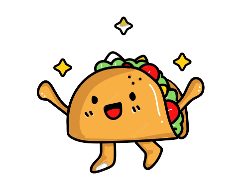

TACOS
DON FELIPON
Desde los inicios de don Felipe, siempre se tenia el sabor unico de los tacos. Inspirado por las tortas de tapal nuestros tacos de guisado han logrado ser los mejores entre todas las colonias
Desde los inicios de don Felipe, siempre se tenia el sabor unico de los tacos. Inspirado por las tortas de tapal nuestros tacos de guisado han logrado ser los mejores entre todas las colonias